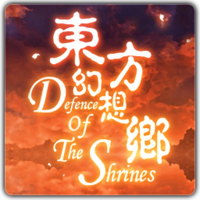

- Welcome to Touhou Wiki!
- Please register to edit. For assistance, check in with our Discord server or IRC channel.
Defence of The Shrines
| 东方幻想乡 Defence of The Shrines | |
|---|---|
|
 | |
| Developer |
HJISTIC |
| Genre |
Real-Time Strategy Game |
| Gameplay |
Single player, Online Multiplayer, 5 vs 5 |
| Platforms | |
| Requirements |
War Craft III + Frozen Throne 1.26a, 1000MHz CPU, 512MB RAM, 32MB Video Card, 550MB Hard Disk |
| Official Site | |
Dongfang Huanxiangxiang ~ Defence of The Shrines (东方幻想乡 ～ Defence of The Shrines, Pinyin: Dōngfāng Huànxiǎngxiāng, lit. "Fantastic Land of the East"), also known as Touhou DoTS, is a custom Warcraft III map mod by the Chinese team led by HJISTIC where Touhou characters pit against each other on a similar gameplay mechanics from the highly popular custom map Defense of the Ancients (DotA). Each team has to destroy the opponents' Shrine, either guarded by Genjii's Sons for the Hakurei side, or Onbashira Towers for the Moriya side at opposing corners of the map.
The first official English version of the game is 0.949c, released in 24th September, 2010 by LuckyCharat's team. After a few more versions, ApharmdB was added to the Defence of The Shrines programming and translation team, releasing the later English versions.
A new Chinese team is developing a "sequel", called Defence of The Shrines 2, using Source Engine Workshop Tools for Dota 2 (the sequel to the original Warcraft III mod).
Gameplay[edit]
Similar to the original Defense of the Ancients, Defence of The Shrines starts out with a character selection, where each player selects a "touhou girl", either from the Hakurei Shrine or the Moriya Shrine. Gameplay typically involves leveling-up and earning points (gold) for better equipments through combat. While fending off your base from attacks, your ultimate goal is to make your way through enemy forces and destroy their shrine to achieve victory.
One of the most noticeable differences in Defence of The Shrines is that the creeps have a chance to drop either "Points" or "Power" power ups. Points provides a small economical boost, while "Power" increases the girls' primary attribute. Additionally, a "Faith" system is included which is obtained every minute elapsed or by killing enemy girls or towers. Faith can be used to activate special powers, different ones for both shrines. See the General Information for more specific information.
Even though Defence of The Shrine is heavily "touhoufied" in every sense, it contains many similarities with Defense of the Ancients such as items from. These are mostly found under different names to enhance the unique flavour. Therefore, most experienced Defense of the Ancients players may find their transition to this game smooth.
As of now, the current version (0.986c) has a selection of 69 girls (0.986b added Mugetsu and Daiyousei) varying from the first Windows Touhou game Embodiment of Scarlet Devil to the latest Windows game Ten Desires. Latest versions even see characters appear out of other works such as Reisen from Silent Sinner in Blue.
Concept[edit]
Name[edit]
The main title Dongfang Huanxiangxiang (东方幻想乡) is written in Simplified Chinese. When converted into Japanese kanji or Traditional Chinese, it shows 東方幻想郷 (Touhou Gensokyo), which is the same title name as the Japanese title of Lotus Land Story. The English sub-title "Defence of The Shrines" makes a direct reference to the game it's based on: Defense of the Ancients. Notice that "Defence" is spelt the British English way instead of the American-English "Defense"; this is because both types of English are common in China. Also, "Shrines" refers to the Hakurei Shrine and Moriya Shrine.
Additional Information[edit]
References[edit]
External Links[edit]
- Official link to DoTS forum
- Associated DoTS forums
- Doujinstyle - Defense of the Shrines community at Doujin Style.
- Shrinemaiden - Defense of the Shrines community at Shrinemaiden.
- Map download
- Model pack - External model pack for 0.980c+ (v0.009). Required in order to play! Extract the folder in your root of WC3 and run the registry files.
- Chinese map - Download link for the latest Chinese version (v0.991p-Normal High Resolution Models; Needs external model pack v0.006)
- English map - Download link for the latest English version (v0.977h2)
- AI Improved Chinese map - Download link for the latest Chinese version with improved AI (v0.990a-Normal)
- AI Improved English map - Download link for the latest English version with improved AI (v0.967g)
- AI Tool (No Longer Functional for Latest Versions)
- AI Tool - Allows you to add AI to latest maps. (Does not work for english maps)